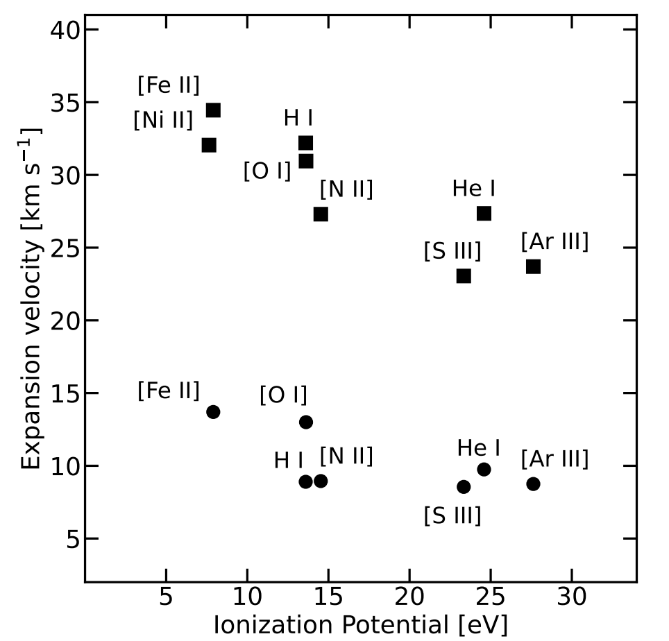

惑星状星雲が輝き始めるまで
太陽のような低・中質量の星は、晩年にAGB（漸近巨星分枝）星となって大きく膨らみ、ガスと塵を放出します。外層を失った後、中心に残る高温の星が紫外線を放つと、周囲のガスが電離されて輝きます。これが惑星状星雲です。名前は昔の望遠鏡で惑星に似て見えたことに由来し、惑星そのものではありません。
Vy 2-2には、電離ガスが輝く一方で、AGB期の外層に関わるOH分子のメーザーも残っています。メーザーは特定の周波数で増幅された電波です。進化に伴い消えやすい分子の信号と、新しく光り始めたガスが共存することが、非常に若い段階を考える根拠になります。
画像では見えにくい動きを、光から読む
Calaらは、カラル・アルト天文台のCAFOSによる中分散分光と、CARMENESによる高分散分光を解析しました。分光は、光を波長ごとに分け、原子やイオンが放つ輝線を調べる方法です。線の強さから温度・密度・元素の量を、波長のずれから視線方向の運動を探れます。
高分散の輝線には四つの速度成分が現れます。著者らは既存の観測も合わせ、比較的高い励起状態の中心領域と、低い励起状態の二つの双極ローブ、つまり両側に張り出すガスに対応づけました。主要な電離シェルでは、衝撃波による励起が卓越する証拠は得られていません。


図を原寸で拡大する
「約210年」は、何の時計なのか
中心領域の水素の膨張速度と、電波観測で報告された見かけの膨張率を組み合わせ、球状の幾何を仮定すると、距離は約1.68 kpc、運動学的年齢は約210年になります。現在の大きさを膨張速度で割り、ガスが広がる時間を見積もる時計です。
これは星そのものの年齢でも、惑星状星雲が特定の西暦に誕生したという記録でもありません。一定の膨張を過去へ延ばせることや、角度と速度が同じ領域を表すことに依存します。それでもOHメーザーの存在と合わせると、形成初期を捉えているという解釈を強めます。
酸素の量が、測り方で食い違う
注目されるもう一つの結果は、存在量不一致因子ADFです。イオンが電子を取り込むときの再結合線と、電子の衝突によって励起される輝線から、それぞれ同じイオンの量を求め、その比をとります。本来同じ量に迫る二つの方法が、大きく違う答えを返すことが惑星状星雲の未解決問題になっています。
今回、電子を二つ失った酸素イオンについてADF(O²⁺) = 13.6 ± 2.6が得られました。再結合線から求めた存在量が、衝突励起線からの値の約14倍という大きな不一致です。星雲全体の酸素が太陽の14倍ある、という意味ではありません。この天体を異常に高いADFを示す星雲の仲間に位置づける結果です。
連星の痕跡を重ね合わせる
高いADFは、共通外層進化を経験した近接連星をもつ星雲で知られています。共通外層進化とは、二つの星が一つの広がった外層に包まれ、相互作用を通じて軌道や外層の状態が変わる過程です。著者らは高いADF、双極構造、恒星由来の弱い輝線などを合わせ、Vy 2-2もそのような進化を経た可能性を支持します。
弱い輝線は、高温の中心星に照らされた伴星から出ているかもしれません。ただし軌道や伴星を直接確定した結果ではなく、もし伴星の光なら中心星自体は未同定です。周期的な変動を追う観測と、化学組成・電離構造の詳しいモデルが必要になります。若い星雲を調べる価値は、完成した形を眺めるだけでなく、その形を作った過程を検証できることにあります。